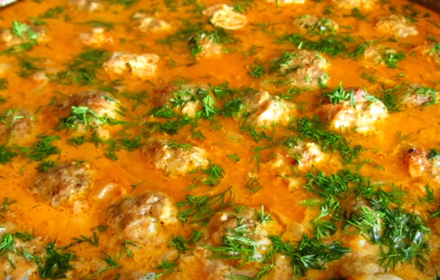

Рецепти з яловичини
Повернутися назад
Стейк із яловичини
Чеський ґуляш
Яловичина по-французьки
Ірландське рагу з яловичиною та картоплею
Лазанья з соусом бешамель

Яловичі фрикадельки в томатному соусі
Яловичина з овочами по-азіатськи
Котлети з фаршу